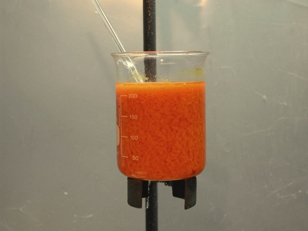
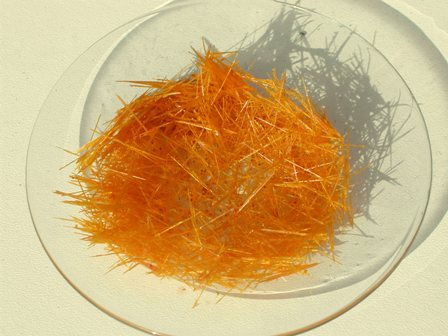

Non è possibile nitrare direttamente l'anilina perchè quest'ultima è troppo sensibile all'ossidazione e l'azione dell'acido nitrico porterebbe solo a prodotti indesiderati (quegli odiosi oliacci neri, incubo di tante reazioni di chimica organica dal dubbio esito...).
Ecco perchè per incoronare la regina delle ammine aromatiche con un bel nitrogruppo -NO2 occorre agire per vie traverse. Traverse anche a seconda di dove si vuole mettere quella corona, se in -orto, in -meta o in -para.
L'altra volta avevo preparato l'1,3-dinitrobenzene appunto per preparare la 3-nitroanilina (-meta) per riduzione selettiva di un nitrogruppo (-NO2) a gruppo amminico (-NH2).
La riduzione selettiva avviene per opera di un solfuro alcalino o di ammonio, che si ossida a tiosolfato. Semplificando:

Ho provato la sintesi in varie procedure, adattandole opportunamente e cambiando il modo di solfurazione: con sodio solfidrato NaSH, con sodio bisolfuro Na2S2, e con potassio polisolfuro K2Sx ("fegato di zolfo" commerciale).
Tutti i metodi portano alla m-ammina; la resa non è mai eccelsa anche perchè si perde prodotto nella indispensabile fase finale di purificazione.
Descriverò una procedura (modificata in un paio di punti) presa dal Vogel edizione 1989 (una delle Bibbie assolute per la chimica organica sperimentale) che usa come agente riduttore il solfidrato di sodio in ambiente metanolico anzichè il più comune polisolfuro di sodio acquoso.
Non avendo solfuro di sodio cristallizzato Na2S.9H2O secondo il Vogel, sono partito direttamente da NaSH che si sarebbe formato in sito per scambio con NaHCO3.
Materiale occorrente
- 1,3-dinitrobenzene NO2-C6H4-NO2
- sodio solfidrato NaSH
- metanolo CH3-OH
- vetreria opportuna
-In una beuta da 100 ml sciogliere 5,5 g di sodio solfidrato in 50 ml di metanolo, scaldando un pochino. Raffreddando e filtrando si deve ottenere una soluzione limpida.
Preparare un setup a ricadere con un pallone da 250 ml, nel quale si pongono 5,5 g di m-dinitrobenzene e 40 ml di metanolo, anche qui scaldando leggermente fino a soluzione completa.
Aggiungere ora a piccole porzioni e mescolando la prima soluzione alla seconda, notando che basta una goccia di solfuro per colorare di rosso il contenuto del pallone; man mano che si procede la colorazione diventa sempre più intensa, fino a sembrare quasi nera.
La reazione è esotermica e se si fa l'aggiunta troppo rapidamente il metanolo passa in ebollizione. Alla fine dell'aggiunta scaldare a riflusso per una mezz'oretta; la soluzione tende ad andare fortemente in sovraebollizione con dei fastidiosissimi "bump", quindi è utile aggiungere nel pallone alcune palline di vetro.
Il Vogel dice a questo punto di eliminare per distillazione l'eccesso di metanolo; io non l'ho distillato ma l'ho lasciato evaporare scaldando leggermente fino ad avere un residuo rosso molto scuro di circa 50 ml. [Manca l'immagine]
Versare il residuo in 200 ml di acqua ghiacciata; la m-nitroanilina precipita in fiocchi aranciati e si separa facilmente per filtrazione su buchner. Lavarla bene con poca acqua gelida e porre il solido in un becher con ancora 200 ml di acqua, portando all'ebollizione.

Questa fase è importante perchè permette di eliminare il poco dinitrobenzene non reagito ed impurezze peciose che si raccolgono alla superficie del liquido; si eliminano facilmente con la punta di una spatolina fredda, alla quale aderiscono. Rifinire eventualmente con qualche strisciolina di carta da filtro.
Lasciar raffreddare lentamente per avere una buona cristallizzazione (io ho avvolto il becher con un panno e lasciato al decrescente calduccio per qualche ora).
La m-nitroanilina è una delle poche sostanze aromatiche che ha il vantaggio di lasciarsi ben cristallizzare senza dover ricorrere a solventi perchè in acqua è molto solubile a caldo e poco a freddo (circa 0,1 g/100 ml).
Con questo metodo, dopo il raffreddamento lento si ottengono per semplice decantazione (meraviglia! non occorre filtrare!) dei bellissimi cristallini in lunghi aghi giallo aranciati (la foto è al tramonto, in realtà la m-NA è più gialla di come appare).
La resa è stata di 3 g pari al 65%, sovrapponibile a quella del Vogel.

Ricordo che questa sostanza è molto tossica ed occorrono quindi tutte le avvertenze durante la sintesi per tenerla a bada... noi da una parte e lei dall'altra.
Infatti dice: guardatemi ma non toccatemi!